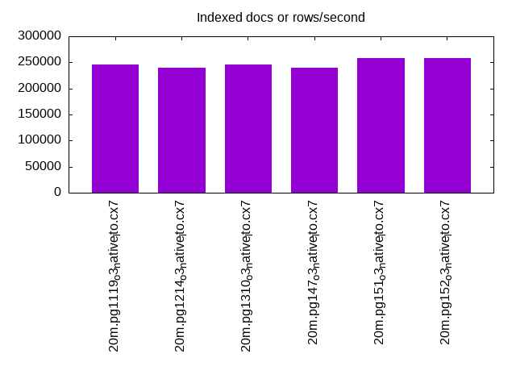

This is a report for the insert benchmark with 20M docs and 4 client(s). It is generated by scripts (bash, awk, sed) and Tufte might not be impressed. An overview of the insert benchmark is here and a short update is here. Below, by DBMS, I mean DBMS+version.config. An example is my8020.c10b40 where my means MySQL, 8020 is version 8.0.20 and c10b40 is the name for the configuration file.
The test server has 8 AMD cores, 16G RAM and an NVMe SSD. It is described here as the Beelink. The benchmark was run with 4 clients and there were 1 or 2 connections per client (1 for queries, 1 for inserts). It uses 1 table. It loads 20M rows without secondary indexes, creates secondary indexes, loads another 20M rows then does 3 read+write tests for one hour each that do queries as fast as possible with 100, 500 and then 1000 writes/second/client concurrent with the queries. The database is cached by the storage engine and the only IO is for writes. Clients and the DBMS share one server. The per-database configs are in the per-database subdirectories here.
The tested DBMS are:
The numbers are inserts/s for l.i0 and l.i1, indexed docs (or rows) /s for l.x and queries/s for q*.2. The values are the average rate over the entire test for inserts (IPS) and queries (QPS). The range of values for IPS and QPS is split into 3 parts: bottom 25%, middle 50%, top 25%. Values in the bottom 25% have a red background, values in the top 25% have a green background and values in the middle have no color. A gray background is used for values that can be ignored because the DBMS did not sustain the target insert rate. Red backgrounds are not used when the minimum value is within 80% of the max value.
| dbms | l.i0 | l.x | l.i1 | q100.1 | q500.1 | q1000.1 |
|---|---|---|---|---|---|---|
| 20m.pg1119_o3_native_lto.cx7 | 250000 | 245122 | 105820 | 43082 | 42105 | 41810 |
| 20m.pg1214_o3_native_lto.cx7 | 240964 | 239286 | 102564 | 46560 | 45224 | 44908 |
| 20m.pg1310_o3_native_lto.cx7 | 253164 | 245122 | 105820 | 47525 | 46617 | 45990 |
| 20m.pg147_o3_native_lto.cx7 | 246914 | 239286 | 104167 | 47036 | 46239 | 45587 |
| 20m.pg151_o3_native_lto.cx7 | 256410 | 257692 | 105263 | 47361 | 46330 | 45924 |
| 20m.pg152_o3_native_lto.cx7 | 253164 | 257692 | 105263 | 47118 | 46367 | 45650 |
This table has relative throughput, throughput for the DBMS relative to the DBMS in the first line, using the absolute throughput from the previous table.
| dbms | l.i0 | l.x | l.i1 | q100.1 | q500.1 | q1000.1 |
|---|---|---|---|---|---|---|
| 20m.pg1119_o3_native_lto.cx7 | 1.00 | 1.00 | 1.00 | 1.00 | 1.00 | 1.00 |
| 20m.pg1214_o3_native_lto.cx7 | 0.96 | 0.98 | 0.97 | 1.08 | 1.07 | 1.07 |
| 20m.pg1310_o3_native_lto.cx7 | 1.01 | 1.00 | 1.00 | 1.10 | 1.11 | 1.10 |
| 20m.pg147_o3_native_lto.cx7 | 0.99 | 0.98 | 0.98 | 1.09 | 1.10 | 1.09 |
| 20m.pg151_o3_native_lto.cx7 | 1.03 | 1.05 | 0.99 | 1.10 | 1.10 | 1.10 |
| 20m.pg152_o3_native_lto.cx7 | 1.01 | 1.05 | 0.99 | 1.09 | 1.10 | 1.09 |
This lists the average rate of inserts/s for the tests that do inserts concurrent with queries. For such tests the query rate is listed in the table above. The read+write tests are setup so that the insert rate should match the target rate every second. Cells that are not at least 95% of the target have a red background to indicate a failure to satisfy the target.
| dbms | q100.1 | q500.1 | q1000.1 |
|---|---|---|---|
| pg1119_o3_native_lto.cx7 | 399 | 1994 | 3989 |
| pg1214_o3_native_lto.cx7 | 399 | 1993 | 3989 |
| pg1310_o3_native_lto.cx7 | 399 | 1993 | 3989 |
| pg147_o3_native_lto.cx7 | 399 | 1994 | 3989 |
| pg151_o3_native_lto.cx7 | 399 | 1994 | 3989 |
| pg152_o3_native_lto.cx7 | 399 | 1994 | 3989 |
| target | 400 | 2000 | 4000 |
l.i0: load without secondary indexes. Graphs for performance per 1-second interval are here.
Average throughput:
Insert response time histogram: each cell has the percentage of responses that take <= the time in the header and max is the max response time in seconds. For the max column values in the top 25% of the range have a red background and in the bottom 25% of the range have a green background. The red background is not used when the min value is within 80% of the max value.
| dbms | 256us | 1ms | 4ms | 16ms | 64ms | 256ms | 1s | 4s | 16s | gt | max |
|---|---|---|---|---|---|---|---|---|---|---|---|
| pg1119_o3_native_lto.cx7 | 99.963 | 0.037 | 0.012 | ||||||||
| pg1214_o3_native_lto.cx7 | 99.965 | 0.035 | 0.011 | ||||||||
| pg1310_o3_native_lto.cx7 | 0.015 | 99.934 | 0.051 | 0.012 | |||||||
| pg147_o3_native_lto.cx7 | 99.966 | 0.034 | 0.011 | ||||||||
| pg151_o3_native_lto.cx7 | 0.004 | 99.959 | 0.037 | 0.010 | |||||||
| pg152_o3_native_lto.cx7 | 0.011 | 99.941 | 0.049 | 0.010 |
Performance metrics for the DBMS listed above. Some are normalized by throughput, others are not. Legend for results is here.
ips qps rps rmbps wps wmbps rpq rkbpq wpi wkbpi csps cpups cspq cpupq dbgb1 dbgb2 rss maxop p50 p99 tag 250000 0 0 0.0 296.5 107.5 0.000 0.000 0.001 0.440 27089 68.9 0.108 22 2.2 5.6 0.0 0.012 73347 6992 20m.pg1119_o3_native_lto.cx7 240964 0 0 0.0 289.1 105.1 0.000 0.000 0.001 0.446 26552 69.9 0.110 23 2.1 5.6 0.0 0.011 71223 35561 20m.pg1214_o3_native_lto.cx7 253164 0 0 0.0 306.5 111.3 0.000 0.000 0.001 0.450 28256 69.8 0.112 22 2.1 5.6 0.0 0.012 75618 11488 20m.pg1310_o3_native_lto.cx7 246914 0 0 0.0 291.9 106.1 0.000 0.000 0.001 0.440 26843 70.0 0.109 23 2.1 5.6 0.0 0.011 72322 51843 20m.pg147_o3_native_lto.cx7 256410 0 0 0.0 307.5 111.3 0.000 0.000 0.001 0.445 28137 69.8 0.110 22 2.1 5.6 0.0 0.010 75916 13585 20m.pg151_o3_native_lto.cx7 253164 0 0 0.0 306.7 111.3 0.000 0.000 0.001 0.450 27916 69.8 0.110 22 2.1 5.6 0.0 0.010 76143 70245 20m.pg152_o3_native_lto.cx7
l.x: create secondary indexes.
Average throughput:
Performance metrics for the DBMS listed above. Some are normalized by throughput, others are not. Legend for results is here.
ips qps rps rmbps wps wmbps rpq rkbpq wpi wkbpi csps cpups cspq cpupq dbgb1 dbgb2 rss maxop p50 p99 tag 245122 0 0 0.0 131.4 61.7 0.000 0.000 0.001 0.258 733 12.6 0.003 4 3.9 9.0 0.0 0.003 NA NA 20m.pg1119_o3_native_lto.cx7 239286 0 0 0.0 108.8 51.0 0.000 0.000 0.000 0.218 770 12.7 0.003 4 3.9 9.0 0.0 0.003 NA NA 20m.pg1214_o3_native_lto.cx7 245122 0 0 0.0 119.0 55.9 0.000 0.000 0.000 0.234 790 12.5 0.003 4 3.9 9.0 0.0 0.003 NA NA 20m.pg1310_o3_native_lto.cx7 239286 0 0 0.0 112.1 52.7 0.000 0.000 0.000 0.226 744 12.6 0.003 4 3.9 9.0 0.0 0.003 NA NA 20m.pg147_o3_native_lto.cx7 257692 0 0 0.0 120.9 56.7 0.000 0.000 0.000 0.225 812 12.7 0.003 4 3.9 9.0 0.0 0.003 NA NA 20m.pg151_o3_native_lto.cx7 257692 0 0 0.0 132.9 61.9 0.000 0.000 0.001 0.246 741 12.7 0.003 4 3.9 9.0 0.0 0.003 NA NA 20m.pg152_o3_native_lto.cx7
l.i1: continue load after secondary indexes created. Graphs for performance per 1-second interval are here.
Average throughput:
Insert response time histogram: each cell has the percentage of responses that take <= the time in the header and max is the max response time in seconds. For the max column values in the top 25% of the range have a red background and in the bottom 25% of the range have a green background. The red background is not used when the min value is within 80% of the max value.
| dbms | 256us | 1ms | 4ms | 16ms | 64ms | 256ms | 1s | 4s | 16s | gt | max |
|---|---|---|---|---|---|---|---|---|---|---|---|
| pg1119_o3_native_lto.cx7 | 99.831 | 0.063 | 0.105 | 0.052 | |||||||
| pg1214_o3_native_lto.cx7 | 99.823 | 0.071 | 0.107 | 0.048 | |||||||
| pg1310_o3_native_lto.cx7 | 99.836 | 0.060 | 0.103 | 0.001 | 0.121 | ||||||
| pg147_o3_native_lto.cx7 | 99.840 | 0.057 | 0.102 | 0.057 | |||||||
| pg151_o3_native_lto.cx7 | 99.790 | 0.078 | 0.132 | 0.055 | |||||||
| pg152_o3_native_lto.cx7 | 99.797 | 0.069 | 0.134 | 0.055 |
Performance metrics for the DBMS listed above. Some are normalized by throughput, others are not. Legend for results is here.
ips qps rps rmbps wps wmbps rpq rkbpq wpi wkbpi csps cpups cspq cpupq dbgb1 dbgb2 rss maxop p50 p99 tag 105820 0 0 0.0 467.2 160.1 0.000 0.000 0.004 1.549 22613 62.8 0.214 47 8.8 24.8 0.0 0.052 27729 5498 20m.pg1119_o3_native_lto.cx7 102564 0 0 0.0 461.2 156.9 0.000 0.000 0.004 1.567 22262 62.7 0.217 49 8.6 24.6 0.0 0.048 27221 5797 20m.pg1214_o3_native_lto.cx7 105820 0 0 0.0 454.9 155.8 0.000 0.000 0.004 1.507 22680 62.8 0.214 47 8.6 24.5 0.0 0.121 27970 4799 20m.pg1310_o3_native_lto.cx7 104167 0 0 0.0 436.4 151.1 0.000 0.000 0.004 1.486 22474 63.8 0.216 49 8.6 24.5 0.0 0.057 27670 5096 20m.pg147_o3_native_lto.cx7 105263 0 0 0.0 452.1 155.7 0.000 0.000 0.004 1.515 22456 63.2 0.213 48 8.6 24.9 0.0 0.055 28070 4095 20m.pg151_o3_native_lto.cx7 105263 0 4 0.0 460.7 158.8 0.000 0.000 0.004 1.544 22594 63.4 0.215 48 8.6 24.9 0.0 0.055 28317 3847 20m.pg152_o3_native_lto.cx7
q100.1: range queries with 100 insert/s per client. Graphs for performance per 1-second interval are here.
Average throughput:
Query response time histogram: each cell has the percentage of responses that take <= the time in the header and max is the max response time in seconds. For max values in the top 25% of the range have a red background and in the bottom 25% of the range have a green background. The red background is not used when the min value is within 80% of the max value.
| dbms | 256us | 1ms | 4ms | 16ms | 64ms | 256ms | 1s | 4s | 16s | gt | max |
|---|---|---|---|---|---|---|---|---|---|---|---|
| pg1119_o3_native_lto.cx7 | 99.984 | 0.010 | 0.006 | nonzero | 0.008 | ||||||
| pg1214_o3_native_lto.cx7 | 99.986 | 0.008 | 0.005 | nonzero | 0.011 | ||||||
| pg1310_o3_native_lto.cx7 | 99.987 | 0.007 | 0.005 | nonzero | 0.008 | ||||||
| pg147_o3_native_lto.cx7 | 99.985 | 0.010 | 0.005 | nonzero | 0.006 | ||||||
| pg151_o3_native_lto.cx7 | 99.986 | 0.009 | 0.005 | nonzero | 0.007 | ||||||
| pg152_o3_native_lto.cx7 | 99.986 | 0.009 | 0.005 | nonzero | 0.008 |
Insert response time histogram: each cell has the percentage of responses that take <= the time in the header and max is the max response time in seconds. For max values in the top 25% of the range have a red background and in the bottom 25% of the range have a green background. The red background is not used when the min value is within 80% of the max value.
| dbms | 256us | 1ms | 4ms | 16ms | 64ms | 256ms | 1s | 4s | 16s | gt | max |
|---|---|---|---|---|---|---|---|---|---|---|---|
| pg1119_o3_native_lto.cx7 | 99.528 | 0.472 | 0.007 | ||||||||
| pg1214_o3_native_lto.cx7 | 99.785 | 0.215 | 0.009 | ||||||||
| pg1310_o3_native_lto.cx7 | 99.750 | 0.250 | 0.007 | ||||||||
| pg147_o3_native_lto.cx7 | 99.403 | 0.597 | 0.012 | ||||||||
| pg151_o3_native_lto.cx7 | 99.736 | 0.264 | 0.008 | ||||||||
| pg152_o3_native_lto.cx7 | 99.569 | 0.431 | 0.008 |
Performance metrics for the DBMS listed above. Some are normalized by throughput, others are not. Legend for results is here.
ips qps rps rmbps wps wmbps rpq rkbpq wpi wkbpi csps cpups cspq cpupq dbgb1 dbgb2 rss maxop p50 p99 tag 399 43082 0 0.0 332.1 13.8 0.000 0.000 0.833 35.445 164383 50.4 3.816 94 9.0 22.2 0.0 0.008 10883 9416 20m.pg1119_o3_native_lto.cx7 399 46560 0 0.0 319.2 13.6 0.000 0.000 0.801 34.992 177603 50.5 3.814 87 8.7 21.4 0.0 0.011 11763 10536 20m.pg1214_o3_native_lto.cx7 399 47525 0 0.0 311.7 12.7 0.000 0.000 0.782 32.723 181261 50.4 3.814 85 8.7 21.5 0.0 0.008 11912 10756 20m.pg1310_o3_native_lto.cx7 399 47036 0 0.0 291.1 12.6 0.000 0.000 0.730 32.321 179440 50.4 3.815 86 8.7 24.7 0.0 0.006 11811 10756 20m.pg147_o3_native_lto.cx7 399 47361 0 0.0 291.2 12.6 0.000 0.000 0.730 32.261 180571 50.4 3.813 85 8.7 24.9 0.0 0.007 11891 10723 20m.pg151_o3_native_lto.cx7 399 47118 0 0.0 291.2 12.5 0.000 0.000 0.730 32.177 179672 50.5 3.813 86 8.7 25.0 0.0 0.008 11907 10772 20m.pg152_o3_native_lto.cx7
q500.1: range queries with 500 insert/s per client. Graphs for performance per 1-second interval are here.
Average throughput:
Query response time histogram: each cell has the percentage of responses that take <= the time in the header and max is the max response time in seconds. For max values in the top 25% of the range have a red background and in the bottom 25% of the range have a green background. The red background is not used when the min value is within 80% of the max value.
| dbms | 256us | 1ms | 4ms | 16ms | 64ms | 256ms | 1s | 4s | 16s | gt | max |
|---|---|---|---|---|---|---|---|---|---|---|---|
| pg1119_o3_native_lto.cx7 | 99.950 | 0.032 | 0.017 | 0.001 | nonzero | 0.018 | |||||
| pg1214_o3_native_lto.cx7 | 99.958 | 0.026 | 0.016 | 0.001 | 0.016 | ||||||
| pg1310_o3_native_lto.cx7 | 99.962 | 0.023 | 0.015 | 0.001 | nonzero | 0.019 | |||||
| pg147_o3_native_lto.cx7 | 99.958 | 0.025 | 0.016 | 0.001 | nonzero | 0.019 | |||||
| pg151_o3_native_lto.cx7 | 99.961 | 0.022 | 0.016 | 0.001 | nonzero | 0.028 | |||||
| pg152_o3_native_lto.cx7 | 99.960 | 0.023 | 0.016 | 0.001 | nonzero | 0.019 |
Insert response time histogram: each cell has the percentage of responses that take <= the time in the header and max is the max response time in seconds. For max values in the top 25% of the range have a red background and in the bottom 25% of the range have a green background. The red background is not used when the min value is within 80% of the max value.
| dbms | 256us | 1ms | 4ms | 16ms | 64ms | 256ms | 1s | 4s | 16s | gt | max |
|---|---|---|---|---|---|---|---|---|---|---|---|
| pg1119_o3_native_lto.cx7 | 96.485 | 3.444 | 0.067 | 0.004 | 0.098 | ||||||
| pg1214_o3_native_lto.cx7 | 97.539 | 2.425 | 0.036 | 0.030 | |||||||
| pg1310_o3_native_lto.cx7 | 96.792 | 3.132 | 0.074 | 0.003 | 0.107 | ||||||
| pg147_o3_native_lto.cx7 | 97.233 | 2.744 | 0.022 | 0.030 | |||||||
| pg151_o3_native_lto.cx7 | 96.807 | 3.143 | 0.050 | 0.033 | |||||||
| pg152_o3_native_lto.cx7 | 97.618 | 2.329 | 0.053 | 0.044 |
Performance metrics for the DBMS listed above. Some are normalized by throughput, others are not. Legend for results is here.
ips qps rps rmbps wps wmbps rpq rkbpq wpi wkbpi csps cpups cspq cpupq dbgb1 dbgb2 rss maxop p50 p99 tag 1994 42105 7 0.1 242.2 22.3 0.000 0.001 0.121 11.433 159819 51.2 3.796 97 10.5 19.6 0.0 0.018 10612 8957 20m.pg1119_o3_native_lto.cx7 1993 45224 2 0.0 202.9 21.8 0.000 0.000 0.102 11.185 171658 51.3 3.796 91 10.2 19.0 0.0 0.016 11352 10089 20m.pg1214_o3_native_lto.cx7 1993 46617 2 0.0 207.5 21.6 0.000 0.000 0.104 11.108 176982 51.3 3.797 88 10.2 19.1 0.0 0.019 11719 10628 20m.pg1310_o3_native_lto.cx7 1994 46239 2 0.0 273.7 20.5 0.000 0.000 0.137 10.500 175368 51.3 3.793 89 10.2 21.3 0.0 0.019 11587 10181 20m.pg147_o3_native_lto.cx7 1994 46330 2 0.0 273.5 20.4 0.000 0.000 0.137 10.495 175680 51.3 3.792 89 10.2 21.5 0.0 0.028 11603 10264 20m.pg151_o3_native_lto.cx7 1994 46367 2 0.0 273.9 20.5 0.000 0.000 0.137 10.500 175828 51.4 3.792 89 10.2 21.5 0.0 0.019 11715 9542 20m.pg152_o3_native_lto.cx7
q1000.1: range queries with 1000 insert/s per client. Graphs for performance per 1-second interval are here.
Average throughput:
Query response time histogram: each cell has the percentage of responses that take <= the time in the header and max is the max response time in seconds. For max values in the top 25% of the range have a red background and in the bottom 25% of the range have a green background. The red background is not used when the min value is within 80% of the max value.
| dbms | 256us | 1ms | 4ms | 16ms | 64ms | 256ms | 1s | 4s | 16s | gt | max |
|---|---|---|---|---|---|---|---|---|---|---|---|
| pg1119_o3_native_lto.cx7 | 99.912 | 0.062 | 0.025 | 0.001 | nonzero | 0.019 | |||||
| pg1214_o3_native_lto.cx7 | 99.915 | 0.057 | 0.026 | 0.001 | nonzero | 0.023 | |||||
| pg1310_o3_native_lto.cx7 | 99.915 | 0.058 | 0.026 | 0.001 | 0.015 | ||||||
| pg147_o3_native_lto.cx7 | 99.913 | 0.059 | 0.027 | 0.001 | nonzero | 0.020 | |||||
| pg151_o3_native_lto.cx7 | 99.916 | 0.056 | 0.027 | 0.001 | 0.016 | ||||||
| pg152_o3_native_lto.cx7 | 99.922 | 0.051 | 0.026 | 0.001 | nonzero | 0.023 |
Insert response time histogram: each cell has the percentage of responses that take <= the time in the header and max is the max response time in seconds. For max values in the top 25% of the range have a red background and in the bottom 25% of the range have a green background. The red background is not used when the min value is within 80% of the max value.
| dbms | 256us | 1ms | 4ms | 16ms | 64ms | 256ms | 1s | 4s | 16s | gt | max |
|---|---|---|---|---|---|---|---|---|---|---|---|
| pg1119_o3_native_lto.cx7 | 96.058 | 3.871 | 0.071 | 0.039 | |||||||
| pg1214_o3_native_lto.cx7 | 94.101 | 5.812 | 0.087 | 0.040 | |||||||
| pg1310_o3_native_lto.cx7 | 94.533 | 5.386 | 0.081 | 0.029 | |||||||
| pg147_o3_native_lto.cx7 | 94.870 | 5.053 | 0.076 | 0.025 | |||||||
| pg151_o3_native_lto.cx7 | 95.317 | 4.617 | 0.067 | 0.030 | |||||||
| pg152_o3_native_lto.cx7 | 96.085 | 3.869 | 0.045 | 0.028 |
Performance metrics for the DBMS listed above. Some are normalized by throughput, others are not. Legend for results is here.
ips qps rps rmbps wps wmbps rpq rkbpq wpi wkbpi csps cpups cspq cpupq dbgb1 dbgb2 rss maxop p50 p99 tag 3989 41810 18 0.2 214.7 28.1 0.000 0.004 0.054 7.203 157283 52.3 3.762 100 12.6 20.0 0.0 0.019 10516 8790 20m.pg1119_o3_native_lto.cx7 3989 44908 20 0.2 241.7 28.7 0.000 0.004 0.061 7.358 168784 52.4 3.758 93 12.6 19.8 0.0 0.023 11192 9829 20m.pg1214_o3_native_lto.cx7 3989 45990 26 0.2 243.2 28.6 0.001 0.005 0.061 7.341 173148 52.4 3.765 91 12.6 19.8 0.0 0.015 11619 10313 20m.pg1310_o3_native_lto.cx7 3989 45587 25 0.2 323.3 27.4 0.001 0.005 0.081 7.022 171507 52.4 3.762 92 12.6 21.7 0.0 0.020 11428 9813 20m.pg147_o3_native_lto.cx7 3989 45924 25 0.2 323.5 27.3 0.001 0.005 0.081 7.020 172762 52.4 3.762 91 12.6 21.8 0.0 0.016 11555 9805 20m.pg151_o3_native_lto.cx7 3989 45650 26 0.2 323.1 27.4 0.001 0.005 0.081 7.021 171630 52.4 3.760 92 12.6 21.8 0.0 0.023 11556 9877 20m.pg152_o3_native_lto.cx7
l.i0: load without secondary indexes
Performance metrics for all DBMS, not just the ones listed above. Some are normalized by throughput, others are not. Legend for results is here.
ips qps rps rmbps wps wmbps rpq rkbpq wpi wkbpi csps cpups cspq cpupq dbgb1 dbgb2 rss maxop p50 p99 tag 250000 0 0 0.0 296.5 107.5 0.000 0.000 0.001 0.440 27089 68.9 0.108 22 2.2 5.6 0.0 0.012 73347 6992 20m.pg1119_o3_native_lto.cx7 240964 0 0 0.0 289.1 105.1 0.000 0.000 0.001 0.446 26552 69.9 0.110 23 2.1 5.6 0.0 0.011 71223 35561 20m.pg1214_o3_native_lto.cx7 253164 0 0 0.0 306.5 111.3 0.000 0.000 0.001 0.450 28256 69.8 0.112 22 2.1 5.6 0.0 0.012 75618 11488 20m.pg1310_o3_native_lto.cx7 246914 0 0 0.0 291.9 106.1 0.000 0.000 0.001 0.440 26843 70.0 0.109 23 2.1 5.6 0.0 0.011 72322 51843 20m.pg147_o3_native_lto.cx7 256410 0 0 0.0 307.5 111.3 0.000 0.000 0.001 0.445 28137 69.8 0.110 22 2.1 5.6 0.0 0.010 75916 13585 20m.pg151_o3_native_lto.cx7 253164 0 0 0.0 306.7 111.3 0.000 0.000 0.001 0.450 27916 69.8 0.110 22 2.1 5.6 0.0 0.010 76143 70245 20m.pg152_o3_native_lto.cx7
l.x: create secondary indexes
Performance metrics for all DBMS, not just the ones listed above. Some are normalized by throughput, others are not. Legend for results is here.
ips qps rps rmbps wps wmbps rpq rkbpq wpi wkbpi csps cpups cspq cpupq dbgb1 dbgb2 rss maxop p50 p99 tag 245122 0 0 0.0 131.4 61.7 0.000 0.000 0.001 0.258 733 12.6 0.003 4 3.9 9.0 0.0 0.003 NA NA 20m.pg1119_o3_native_lto.cx7 239286 0 0 0.0 108.8 51.0 0.000 0.000 0.000 0.218 770 12.7 0.003 4 3.9 9.0 0.0 0.003 NA NA 20m.pg1214_o3_native_lto.cx7 245122 0 0 0.0 119.0 55.9 0.000 0.000 0.000 0.234 790 12.5 0.003 4 3.9 9.0 0.0 0.003 NA NA 20m.pg1310_o3_native_lto.cx7 239286 0 0 0.0 112.1 52.7 0.000 0.000 0.000 0.226 744 12.6 0.003 4 3.9 9.0 0.0 0.003 NA NA 20m.pg147_o3_native_lto.cx7 257692 0 0 0.0 120.9 56.7 0.000 0.000 0.000 0.225 812 12.7 0.003 4 3.9 9.0 0.0 0.003 NA NA 20m.pg151_o3_native_lto.cx7 257692 0 0 0.0 132.9 61.9 0.000 0.000 0.001 0.246 741 12.7 0.003 4 3.9 9.0 0.0 0.003 NA NA 20m.pg152_o3_native_lto.cx7
l.i1: continue load after secondary indexes created
Performance metrics for all DBMS, not just the ones listed above. Some are normalized by throughput, others are not. Legend for results is here.
ips qps rps rmbps wps wmbps rpq rkbpq wpi wkbpi csps cpups cspq cpupq dbgb1 dbgb2 rss maxop p50 p99 tag 105820 0 0 0.0 467.2 160.1 0.000 0.000 0.004 1.549 22613 62.8 0.214 47 8.8 24.8 0.0 0.052 27729 5498 20m.pg1119_o3_native_lto.cx7 102564 0 0 0.0 461.2 156.9 0.000 0.000 0.004 1.567 22262 62.7 0.217 49 8.6 24.6 0.0 0.048 27221 5797 20m.pg1214_o3_native_lto.cx7 105820 0 0 0.0 454.9 155.8 0.000 0.000 0.004 1.507 22680 62.8 0.214 47 8.6 24.5 0.0 0.121 27970 4799 20m.pg1310_o3_native_lto.cx7 104167 0 0 0.0 436.4 151.1 0.000 0.000 0.004 1.486 22474 63.8 0.216 49 8.6 24.5 0.0 0.057 27670 5096 20m.pg147_o3_native_lto.cx7 105263 0 0 0.0 452.1 155.7 0.000 0.000 0.004 1.515 22456 63.2 0.213 48 8.6 24.9 0.0 0.055 28070 4095 20m.pg151_o3_native_lto.cx7 105263 0 4 0.0 460.7 158.8 0.000 0.000 0.004 1.544 22594 63.4 0.215 48 8.6 24.9 0.0 0.055 28317 3847 20m.pg152_o3_native_lto.cx7
q100.1: range queries with 100 insert/s per client
Performance metrics for all DBMS, not just the ones listed above. Some are normalized by throughput, others are not. Legend for results is here.
ips qps rps rmbps wps wmbps rpq rkbpq wpi wkbpi csps cpups cspq cpupq dbgb1 dbgb2 rss maxop p50 p99 tag 399 43082 0 0.0 332.1 13.8 0.000 0.000 0.833 35.445 164383 50.4 3.816 94 9.0 22.2 0.0 0.008 10883 9416 20m.pg1119_o3_native_lto.cx7 399 46560 0 0.0 319.2 13.6 0.000 0.000 0.801 34.992 177603 50.5 3.814 87 8.7 21.4 0.0 0.011 11763 10536 20m.pg1214_o3_native_lto.cx7 399 47525 0 0.0 311.7 12.7 0.000 0.000 0.782 32.723 181261 50.4 3.814 85 8.7 21.5 0.0 0.008 11912 10756 20m.pg1310_o3_native_lto.cx7 399 47036 0 0.0 291.1 12.6 0.000 0.000 0.730 32.321 179440 50.4 3.815 86 8.7 24.7 0.0 0.006 11811 10756 20m.pg147_o3_native_lto.cx7 399 47361 0 0.0 291.2 12.6 0.000 0.000 0.730 32.261 180571 50.4 3.813 85 8.7 24.9 0.0 0.007 11891 10723 20m.pg151_o3_native_lto.cx7 399 47118 0 0.0 291.2 12.5 0.000 0.000 0.730 32.177 179672 50.5 3.813 86 8.7 25.0 0.0 0.008 11907 10772 20m.pg152_o3_native_lto.cx7
q500.1: range queries with 500 insert/s per client
Performance metrics for all DBMS, not just the ones listed above. Some are normalized by throughput, others are not. Legend for results is here.
ips qps rps rmbps wps wmbps rpq rkbpq wpi wkbpi csps cpups cspq cpupq dbgb1 dbgb2 rss maxop p50 p99 tag 1994 42105 7 0.1 242.2 22.3 0.000 0.001 0.121 11.433 159819 51.2 3.796 97 10.5 19.6 0.0 0.018 10612 8957 20m.pg1119_o3_native_lto.cx7 1993 45224 2 0.0 202.9 21.8 0.000 0.000 0.102 11.185 171658 51.3 3.796 91 10.2 19.0 0.0 0.016 11352 10089 20m.pg1214_o3_native_lto.cx7 1993 46617 2 0.0 207.5 21.6 0.000 0.000 0.104 11.108 176982 51.3 3.797 88 10.2 19.1 0.0 0.019 11719 10628 20m.pg1310_o3_native_lto.cx7 1994 46239 2 0.0 273.7 20.5 0.000 0.000 0.137 10.500 175368 51.3 3.793 89 10.2 21.3 0.0 0.019 11587 10181 20m.pg147_o3_native_lto.cx7 1994 46330 2 0.0 273.5 20.4 0.000 0.000 0.137 10.495 175680 51.3 3.792 89 10.2 21.5 0.0 0.028 11603 10264 20m.pg151_o3_native_lto.cx7 1994 46367 2 0.0 273.9 20.5 0.000 0.000 0.137 10.500 175828 51.4 3.792 89 10.2 21.5 0.0 0.019 11715 9542 20m.pg152_o3_native_lto.cx7
q1000.1: range queries with 1000 insert/s per client
Performance metrics for all DBMS, not just the ones listed above. Some are normalized by throughput, others are not. Legend for results is here.
ips qps rps rmbps wps wmbps rpq rkbpq wpi wkbpi csps cpups cspq cpupq dbgb1 dbgb2 rss maxop p50 p99 tag 3989 41810 18 0.2 214.7 28.1 0.000 0.004 0.054 7.203 157283 52.3 3.762 100 12.6 20.0 0.0 0.019 10516 8790 20m.pg1119_o3_native_lto.cx7 3989 44908 20 0.2 241.7 28.7 0.000 0.004 0.061 7.358 168784 52.4 3.758 93 12.6 19.8 0.0 0.023 11192 9829 20m.pg1214_o3_native_lto.cx7 3989 45990 26 0.2 243.2 28.6 0.001 0.005 0.061 7.341 173148 52.4 3.765 91 12.6 19.8 0.0 0.015 11619 10313 20m.pg1310_o3_native_lto.cx7 3989 45587 25 0.2 323.3 27.4 0.001 0.005 0.081 7.022 171507 52.4 3.762 92 12.6 21.7 0.0 0.020 11428 9813 20m.pg147_o3_native_lto.cx7 3989 45924 25 0.2 323.5 27.3 0.001 0.005 0.081 7.020 172762 52.4 3.762 91 12.6 21.8 0.0 0.016 11555 9805 20m.pg151_o3_native_lto.cx7 3989 45650 26 0.2 323.1 27.4 0.001 0.005 0.081 7.021 171630 52.4 3.760 92 12.6 21.8 0.0 0.023 11556 9877 20m.pg152_o3_native_lto.cx7
Insert response time histogram
256us 1ms 4ms 16ms 64ms 256ms 1s 4s 16s gt max tag 0.000 0.000 99.963 0.037 0.000 0.000 0.000 0.000 0.000 0.000 0.012 pg1119_o3_native_lto.cx7 0.000 0.000 99.965 0.035 0.000 0.000 0.000 0.000 0.000 0.000 0.011 pg1214_o3_native_lto.cx7 0.000 0.015 99.934 0.051 0.000 0.000 0.000 0.000 0.000 0.000 0.012 pg1310_o3_native_lto.cx7 0.000 0.000 99.966 0.034 0.000 0.000 0.000 0.000 0.000 0.000 0.011 pg147_o3_native_lto.cx7 0.000 0.004 99.959 0.037 0.000 0.000 0.000 0.000 0.000 0.000 0.010 pg151_o3_native_lto.cx7 0.000 0.011 99.941 0.049 0.000 0.000 0.000 0.000 0.000 0.000 0.010 pg152_o3_native_lto.cx7
TODO - determine whether there is data for create index response time
Insert response time histogram
256us 1ms 4ms 16ms 64ms 256ms 1s 4s 16s gt max tag 0.000 0.000 99.831 0.063 0.105 0.000 0.000 0.000 0.000 0.000 0.052 pg1119_o3_native_lto.cx7 0.000 0.000 99.823 0.071 0.107 0.000 0.000 0.000 0.000 0.000 0.048 pg1214_o3_native_lto.cx7 0.000 0.000 99.836 0.060 0.103 0.001 0.000 0.000 0.000 0.000 0.121 pg1310_o3_native_lto.cx7 0.000 0.000 99.840 0.057 0.102 0.000 0.000 0.000 0.000 0.000 0.057 pg147_o3_native_lto.cx7 0.000 0.000 99.790 0.078 0.132 0.000 0.000 0.000 0.000 0.000 0.055 pg151_o3_native_lto.cx7 0.000 0.000 99.797 0.069 0.134 0.000 0.000 0.000 0.000 0.000 0.055 pg152_o3_native_lto.cx7
Query response time histogram
256us 1ms 4ms 16ms 64ms 256ms 1s 4s 16s gt max tag 99.984 0.010 0.006 nonzero 0.000 0.000 0.000 0.000 0.000 0.000 0.008 pg1119_o3_native_lto.cx7 99.986 0.008 0.005 nonzero 0.000 0.000 0.000 0.000 0.000 0.000 0.011 pg1214_o3_native_lto.cx7 99.987 0.007 0.005 nonzero 0.000 0.000 0.000 0.000 0.000 0.000 0.008 pg1310_o3_native_lto.cx7 99.985 0.010 0.005 nonzero 0.000 0.000 0.000 0.000 0.000 0.000 0.006 pg147_o3_native_lto.cx7 99.986 0.009 0.005 nonzero 0.000 0.000 0.000 0.000 0.000 0.000 0.007 pg151_o3_native_lto.cx7 99.986 0.009 0.005 nonzero 0.000 0.000 0.000 0.000 0.000 0.000 0.008 pg152_o3_native_lto.cx7
Insert response time histogram
256us 1ms 4ms 16ms 64ms 256ms 1s 4s 16s gt max tag 0.000 0.000 99.528 0.472 0.000 0.000 0.000 0.000 0.000 0.000 0.007 pg1119_o3_native_lto.cx7 0.000 0.000 99.785 0.215 0.000 0.000 0.000 0.000 0.000 0.000 0.009 pg1214_o3_native_lto.cx7 0.000 0.000 99.750 0.250 0.000 0.000 0.000 0.000 0.000 0.000 0.007 pg1310_o3_native_lto.cx7 0.000 0.000 99.403 0.597 0.000 0.000 0.000 0.000 0.000 0.000 0.012 pg147_o3_native_lto.cx7 0.000 0.000 99.736 0.264 0.000 0.000 0.000 0.000 0.000 0.000 0.008 pg151_o3_native_lto.cx7 0.000 0.000 99.569 0.431 0.000 0.000 0.000 0.000 0.000 0.000 0.008 pg152_o3_native_lto.cx7
Query response time histogram
256us 1ms 4ms 16ms 64ms 256ms 1s 4s 16s gt max tag 99.950 0.032 0.017 0.001 nonzero 0.000 0.000 0.000 0.000 0.000 0.018 pg1119_o3_native_lto.cx7 99.958 0.026 0.016 0.001 0.000 0.000 0.000 0.000 0.000 0.000 0.016 pg1214_o3_native_lto.cx7 99.962 0.023 0.015 0.001 nonzero 0.000 0.000 0.000 0.000 0.000 0.019 pg1310_o3_native_lto.cx7 99.958 0.025 0.016 0.001 nonzero 0.000 0.000 0.000 0.000 0.000 0.019 pg147_o3_native_lto.cx7 99.961 0.022 0.016 0.001 nonzero 0.000 0.000 0.000 0.000 0.000 0.028 pg151_o3_native_lto.cx7 99.960 0.023 0.016 0.001 nonzero 0.000 0.000 0.000 0.000 0.000 0.019 pg152_o3_native_lto.cx7
Insert response time histogram
256us 1ms 4ms 16ms 64ms 256ms 1s 4s 16s gt max tag 0.000 0.000 96.485 3.444 0.067 0.004 0.000 0.000 0.000 0.000 0.098 pg1119_o3_native_lto.cx7 0.000 0.000 97.539 2.425 0.036 0.000 0.000 0.000 0.000 0.000 0.030 pg1214_o3_native_lto.cx7 0.000 0.000 96.792 3.132 0.074 0.003 0.000 0.000 0.000 0.000 0.107 pg1310_o3_native_lto.cx7 0.000 0.000 97.233 2.744 0.022 0.000 0.000 0.000 0.000 0.000 0.030 pg147_o3_native_lto.cx7 0.000 0.000 96.807 3.143 0.050 0.000 0.000 0.000 0.000 0.000 0.033 pg151_o3_native_lto.cx7 0.000 0.000 97.618 2.329 0.053 0.000 0.000 0.000 0.000 0.000 0.044 pg152_o3_native_lto.cx7
Query response time histogram
256us 1ms 4ms 16ms 64ms 256ms 1s 4s 16s gt max tag 99.912 0.062 0.025 0.001 nonzero 0.000 0.000 0.000 0.000 0.000 0.019 pg1119_o3_native_lto.cx7 99.915 0.057 0.026 0.001 nonzero 0.000 0.000 0.000 0.000 0.000 0.023 pg1214_o3_native_lto.cx7 99.915 0.058 0.026 0.001 0.000 0.000 0.000 0.000 0.000 0.000 0.015 pg1310_o3_native_lto.cx7 99.913 0.059 0.027 0.001 nonzero 0.000 0.000 0.000 0.000 0.000 0.020 pg147_o3_native_lto.cx7 99.916 0.056 0.027 0.001 0.000 0.000 0.000 0.000 0.000 0.000 0.016 pg151_o3_native_lto.cx7 99.922 0.051 0.026 0.001 nonzero 0.000 0.000 0.000 0.000 0.000 0.023 pg152_o3_native_lto.cx7
Insert response time histogram
256us 1ms 4ms 16ms 64ms 256ms 1s 4s 16s gt max tag 0.000 0.000 96.058 3.871 0.071 0.000 0.000 0.000 0.000 0.000 0.039 pg1119_o3_native_lto.cx7 0.000 0.000 94.101 5.812 0.087 0.000 0.000 0.000 0.000 0.000 0.040 pg1214_o3_native_lto.cx7 0.000 0.000 94.533 5.386 0.081 0.000 0.000 0.000 0.000 0.000 0.029 pg1310_o3_native_lto.cx7 0.000 0.000 94.870 5.053 0.076 0.000 0.000 0.000 0.000 0.000 0.025 pg147_o3_native_lto.cx7 0.000 0.000 95.317 4.617 0.067 0.000 0.000 0.000 0.000 0.000 0.030 pg151_o3_native_lto.cx7 0.000 0.000 96.085 3.869 0.045 0.000 0.000 0.000 0.000 0.000 0.028 pg152_o3_native_lto.cx7